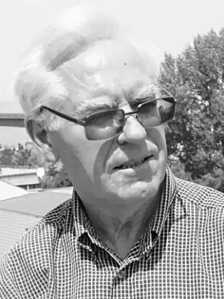

прозаїк, критик
(Народився 1938 р.)
Глушко Олександр Кіндратович народився 14 вересня 1938 року в селі Покровка Очаківського району. Закінчив факультет журналістики Київського університету (1964) та Академію суспільних наук при ЦК КПРС (1975). Працював у Миколаївській обласній газеті "Южная правда", п'ять років редактором обласної молодіжної газети "Ленінське плем'я". З 1986 року – секретар правління Спілки письменників України, редактор журналу "Вітчизна". Перша збірка оповідань "Маслиновий гай" (1981) відкрила для українських читачів нових героїв – рибалок, виноградарів, моряків, що живуть на загублених у морі островах, продутих вітрами Північного Причорномор'я. У 1989 році оповідання склали основу збірки "Фонтан з музыкой", виданої "Молодой гвардией" у Москві. Найбільш значною роботою О. Глушка став роман "Кінбурн" (1988) – багатопланове історичне полотно про події, що відбувалися на півдні України в останній чверті 18 ст. Автор літературно – критичних праць "На бистрині часу. Ідейно–тематичні шукання радянської новелістики 70-х років" (1980), "З позицій соціального оптимізму. Образ позитивного героя в сучасній радянській прозі" (1983). Кандидат філологічних наук, доцент Київського університету ім. Тараса Шевченка, доцент інституту журналістики, заслужений журналіст України, лауреат премії ім. Андрія Головка ( за роман "Стрибок тарпана"). Член Національної Спілки письменників України(1982). Основні твори Кинбурн: Роман. – М.: Сов писатель, 1991. – 313 с.: ил. Кінбурн: Іст. роман. – М.: Сов. писатель, 1991. – 313 с. Маслиновий гай: Оповідання. – К.: Рад. письменник, 1981. – 165 с. Чорноморський заповідник. – Одеса: Маяк, 1972. – 32 с.